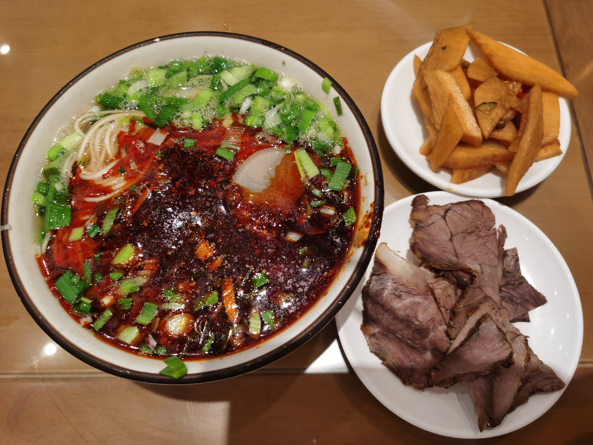
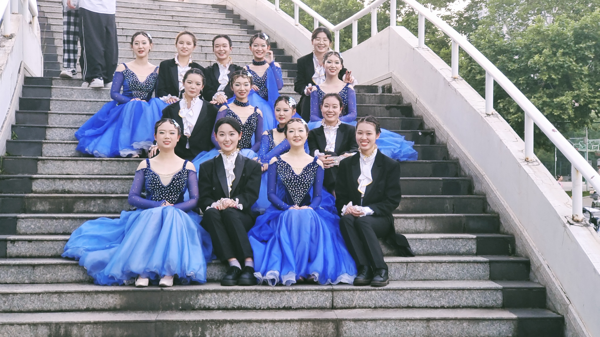

美食

喜欢吃牛肉面，兰州牛肉面距今已有一百二十年的历史，它以“汤镜者清，肉烂者香，面细者精”的独特风味和“一清二白 三红四绿五黄”的悦目色彩赢得了国内乃至全世界顾客的好评，被中国烹饪协会评为三大中式快餐之一， 而成为地地道道的“中华第一面”。
旅行
旅行会改变人的气质，让人的目光变得更加长远。在旅途中，你会看到不同的人有不同的习惯，你才能了解到， 并不是每个人都按照你的生活方式在生活。这样，人的心胸才会变得更加宽广。——余光中
阅读
读书本身是一种修养方式。《宋史》曾载，与朱熹、张栻并称“东南三贤”的吕祖谦，少时性情急躁， 极易迁怒于人。他正是通过阅读，不断磨练自己的品性，最终在读到孔子“躬自厚而薄责于人”的教诲时， 自己心中的忿气“涣然冰释”。我们常说，文以化人，这既是指在古圣先贤的熏陶下，延展精神世界的疆土， 也是指以阅读修身养性，用读书淬炼意志品质。

兴趣爱好
体育舞蹈也称"国际标准交谊舞"。体育运动项目之一。是以男女为伴的一种步行式双人舞的竞赛项目。 分两个项群，十个舞种。其中摩登舞项群含有华尔兹、维也纳华尔兹、探戈、狐步和快步舞， 拉丁舞项群包括伦巴、恰恰、桑巴、牛仔和斗牛舞。每个舞种均有各自舞曲、舞步及风格。 根据各舞种的乐曲和动作要求，组编成各自的成套动作。